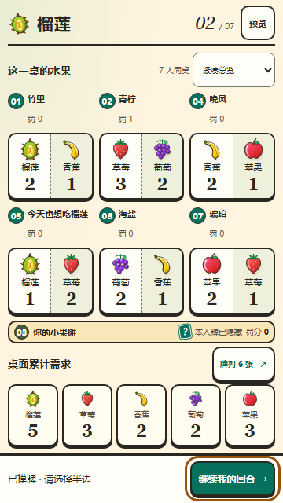
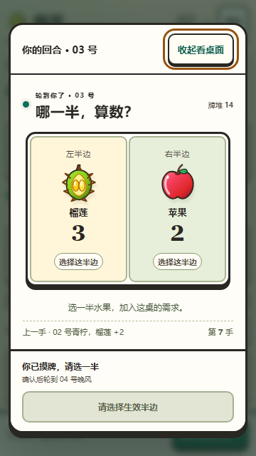
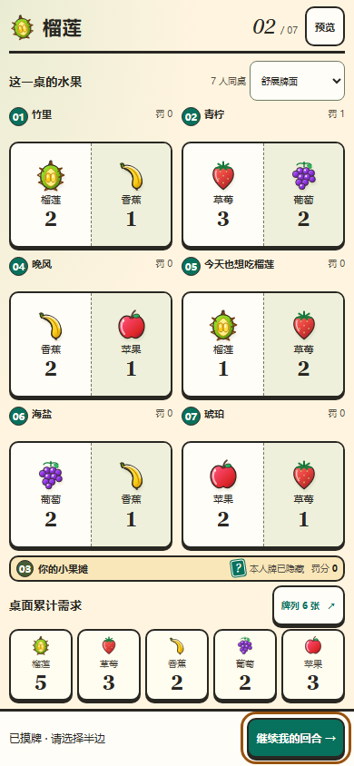
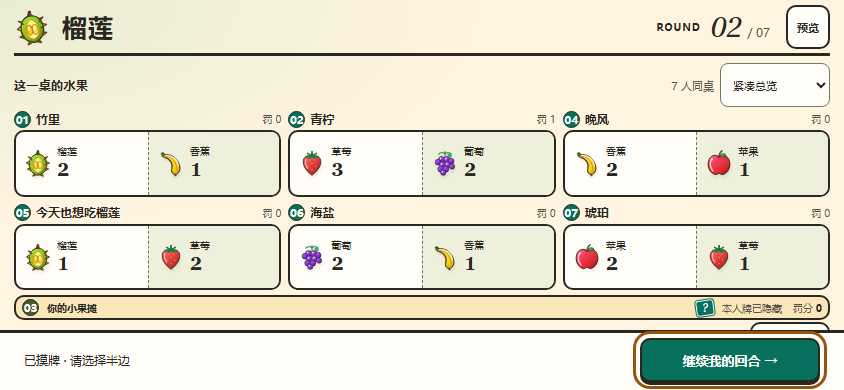
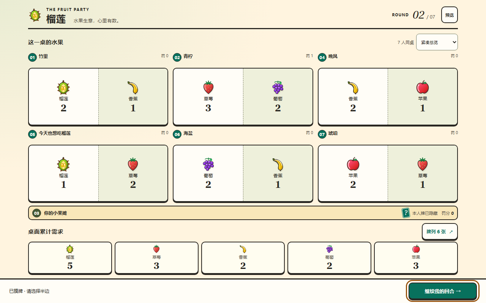
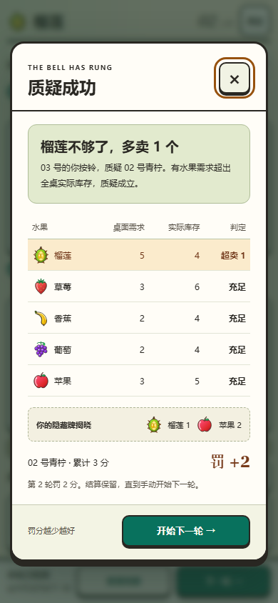
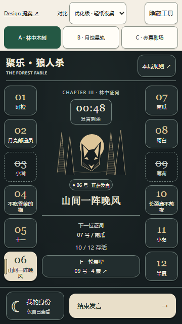
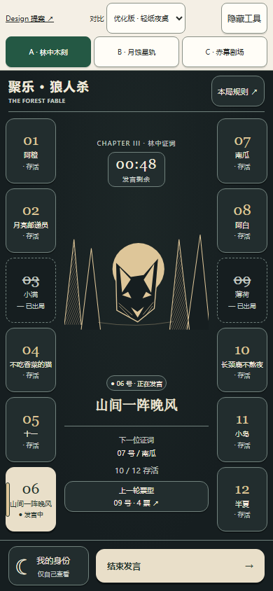
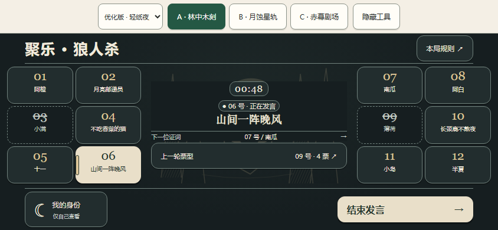
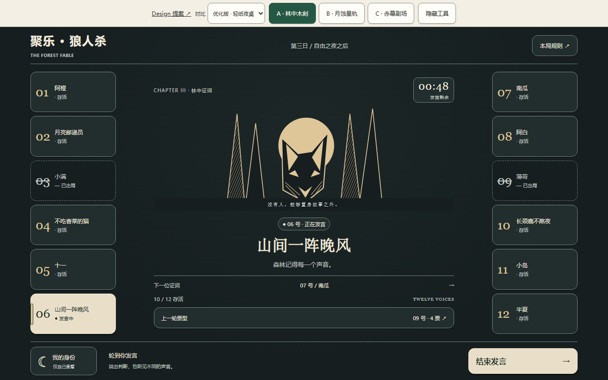

本轮结论：在真实浏览器中复核了 360×640、390×844、844×390、1280×800 四种视口，并跑通榴莲回合全流程。
共发现并修复 4 个具体问题，修复后 116 项断言全部通过（72 项流程 + 44 项弹层/交互），两种布局均无横向溢出、无文字裁切、无小于 44px 的触控目标。
1. 修复的具体问题
| # | 位置 | 问题（修复前实测） | 修复 |
|---|---|---|---|
| 1 | 榴莲 · 横屏 844×390 | 牌面小卡用 grid 两列布局，但数量 <b> 嵌在 <span> 内部、不是网格子项，落到第 1 行第 2 列。实测图片 img 149..177 与水果名 145..181 垂直重叠，数量被压在名称上。 |
改为网格内单行两项：图片第 1 列垂直居中，<span> 第 2 列内部用 flex 纵向排名称与数量。 |
| 2 | 狼人杀 · 竖屏 360×640 | 左右席位栏仅 65px，.name 保留 nowrap + ellipsis，12 个昵称全部被裁（scrollHeight 14px 挤进 clientHeight 9px），月亮邮递员／长颈鹿不熬夜／山间一阵晚风 显示不全。 |
≤380px 时允许换行并隐藏最低优先级的「存活/发言中」状态行，把高度让给完整昵称；长昵称最多 2 行完整显示。 |
| 3 | 榴莲 · 全部视口 | 预览工具栏「预览」按钮实测宽 42px（高 44px），短横屏下仍不足 44px 触控标准。 | min-width:44px，四种视口均达标。 |
| 4 | 榴莲 · 回合流程 | 确认出牌后进入 waiting，底部只剩禁用的「等待 04 号行动」，没有可点的下一步，「确认 → 下一轮」整轮闭环走不通（自动化点击超时 30s）。 |
waiting 状态补上「看牌列」与可用的「开始下一轮 →」，回合闭环完整。 |
2. 四种视口布局复核
| 视口 | 横向溢出 | 文字裁切 | 触控 <44px | 整屏无需滚动 |
|---|---|---|---|---|
| 360×640 | 无 | 无 | 无 | 紧凑模式一屏；舒展模式可滚动（符合设计） |
| 390×844 | 无 | 无 | 无 | 紧凑与舒展均一屏 |
| 844×390 | 无 | 无 | 无 | 一屏，牌面与需求并列 |
| 1280×800 | 无 | 无 | 无 | 紧凑一屏 |
狼人杀在四种视口下均为左右各 6 人、12 席位全部可见，woodcut / eclipse / curtain 三种主题逐一复核，均无裁切与溢出；长昵称完整显示。
3. 榴莲回合流程验证（每种视口 18 步，共 72 项）
| # | 验证内容 | 结果 |
|---|---|---|
| 1 | 轮到自己（摸牌）时自动弹出操作窗，操作按钮在窗内 | 通过 |
| 2 | 「收起看桌面」只收起、不提交，牌列数不变（6） | 通过 |
| 3 | 「继续我的回合」重新打开弹窗 | 通过 |
| 4 | 摸牌进入选半边，「确认出牌」初始为禁用 | 通过 |
| 5 | 选左半边后确认按钮变为可用 | 通过 |
| 6 | 已选半边时收起弹窗：仍未提交（牌列仍 6） | 通过 |
| 7 | 重新打开后选择保留（左半边仍是选中态） | 通过 |
| 8 | 左半边 → 右半边 可切换 | 通过 |
| 9 | 确认后只提交一次（6→7），弹窗关闭，进入等待 | 通过 |
| 10 | 确认后等待 300ms 无重复提交、无残留弹层 | 通过 |
| 11 | 「开始下一轮」重置牌列并自动打开摸牌弹窗 | 通过 |
| 12 | 按铃质疑打开结算，同一时刻只有 1 个弹层 | 通过 |
| 13 | 关闭结算后结果保留，牌列数不变 | 通过 |
| 14 | 「查看结算」可重新打开 | 通过 |
| 15 | 结算后「开始下一轮」自动打开摸牌弹窗 | 通过 |
| 16 | ESC 关闭弹窗后，「继续我的回合」条仍在 | 通过 |
| 17 | 点击遮罩关闭弹窗，恢复条仍在 | 通过 |
| 18 | 牌列弹层可打开（6 手牌、6 个生效半边） | 通过 |
4. 弹层与交互细节（每种视口 11 项，共 44 项）
- 牌列弹层：6 手牌 / 12 半边 / 6 个生效标记，底部按钮始终在视口内；ESC 可关闭。
- 质疑结算：库存对比表 5 行 + 隐藏牌揭晓 + 罚分块齐全；内容超高时内部滚动，滚到底后「开始下一轮」仍可点中（
elementFromPoint命中自身，高 44px）。 - 狼人杀四类弹层（我的身份 / 本局规则 / 上一轮票型 / 点选席位）在四种视口下均完整落在视口内，关闭按钮 44px 且可见。
- 「结束发言」推进到 07 号南瓜，下一位更新为 08 号阿白，按钮转为禁用。
- 私密身份弹层在窗口失焦（
blur）时自动收起，不泄露身份。 - 主题切换到「赤幕剧场」后仍是左右各 6 人，无横向或纵向滚动。
5. 样式与设计偏好核对
- Georgia 衬线大数字（保持不回退）：
.d-round strong、.d-mini-half b、.d-total strong、.d-half-fruit b计算字体族首位均为Georgia。 - 小辅助数字仍为正文无衬线：
.d-number、.d-player-penalty、.d-total-name计算字体族为Microsoft YaHei，未被统一成衬线。 - 数量在水果下方：四种视口实测均为 图片 → 水果名 → 数量 的纵向顺序，且名称与数量框不重叠。
- 7 人长昵称：
今天也想吃榴莲（8 字）在四种视口均完整显示；狼人杀月亮邮递员／不吃香菜的猫／山间一阵晚风／长颈鹿不熬夜修复后全部完整。 - 对比度自检：对榴莲页面全部文本节点按 WCAG 计算前景/有效背景对比度，无低于 4.5:1（大字号 3:1）的项。
6. 复核截图（修复后版本）
下列截图均由修复后的文件在对应视口实时渲染，PNG 尺寸与视口一致，且经像素多样性校验确认非空白页。
榴莲 紧凑总览 · 回合弹窗 · 舒展牌面 · 质疑结算






狼人杀 refined + 林中木刻（左右各 6 人）




7. 工程校验
node --check durian.js/art-directions.js：通过。npm run typecheck：通过（server + client）。node --import tsx --test packages/games/durian/tests/views.test.ts packages/games/durian/tests/rules.test.ts：10/10 通过。- 浏览器控制台：四种视口 × 榴莲各场景，无
pageerror、无console.error、无资源加载失败。
8. 诚实边界
本轮为 HTML 原型 的浏览器复核，未改动任何正式业务项目源码，也未把候选样式替换进
packages/client。
- 榴莲原型为固定 7 人示例数据，未接入真实协议、角色权限与对局生命周期。
- 狼人杀
art-directions.html只演示白天发言场景；夜晚/投票完整交互仍在早期werewolf.html，本轮未验收该页。 - Georgia 为系统字体，Windows Chromium 已有；不同设备若缺失会回退 Times New Roman/serif，字宽会有差异。
- 本轮未做真机（iOS/Android 实机）触控与安全区实测，结论基于 Chromium 模拟视口。
- 第二批（法官端、榴莲公共桌面、朝外展示端）尚未开始，需用户确认第一批后再做。
复核脚本为一次性工具，未随原型目录交付；截图位于 docs/ui-preview/werewolf-durian/screenshots/verified-20260918/。